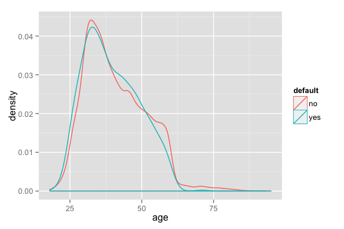
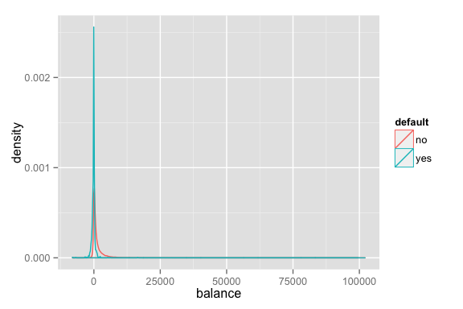
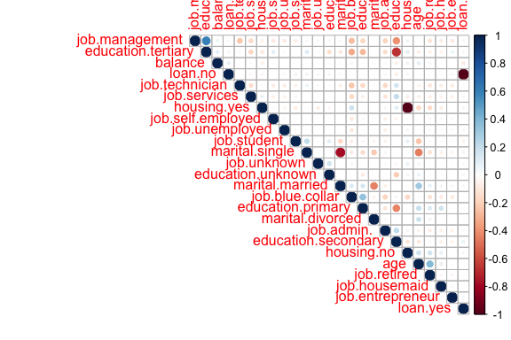
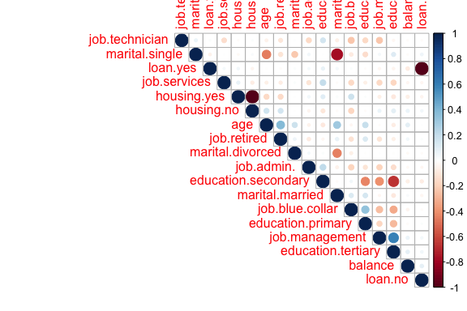
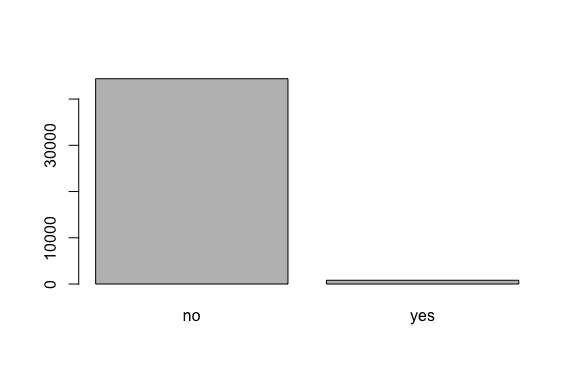
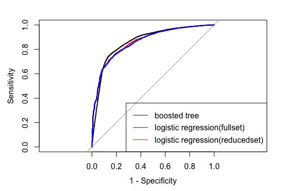

build predictive models to calculate the probability of the credit risk and choose cut-off rate for default risk to provide decision support on profit-risk control
Shiming Zhou
November 29, 2014
45211 observations with 8 variables
change the xlsx file to csv file to make the reading process much faster
mydata <- read.csv("Jenn's test.csv", header = TRUE)library(caret)## Loading required package: lattice
## Loading required package: ggplot2
naTest <- apply(mydata, 2, function(x) sum(is.na(x)==TRUE))
naTest## age job marital education default balance housing
## 0 0 0 0 0 0 0
## loan
## 0
No missing values, cheers!
 
Right skewness distribution.
"BoxCox" and Standardizing to make numeric variables more normalized distribution like, "Centering" and "Scaling" to improve the numerical stability of the calculations.
preObj <- preProcess(mydata1[,-3], method = c("BoxCox","center", "scale"))
trainmydata <- predict(preObj, mydata1[,-3])
mydata2 <- mydata
mydata2$age <- trainmydata$age
mydata2$balance <- trainmydata$balancedummies <- dummyVars(default~., data = mydata2)
mydata3 <- predict(dummies, newdata = mydata2)
mydata3 <- data.frame(mydata3)
mydata3$default <- mydata2$defaultthe binary nature of many predictors resulted in many cases where the data are very sparse and unbalanced.These high degree of class imbalance indicates that many of the predictors could be classified as near-zero variance predictors, which can lead to computational issues in many of the models.
nzv <- nearZeroVar(mydata3, saveMetrics=TRUE)
nzv1 <- which(nzv$nzv==TRUE)
mydata4 <- mydata3[,-(nzv1)]
mydata4$default <- mydata3$defaultmydata3 included all the variables regardless of their distribution. mydata4 was developed for models that are sensitive to sparse and unbalanced predictorsVisualize the correlation plots
 
a high-correlations filter was used on the predictors set to remove these highly redundant predictors from both datasets
fullCovMat <- cov(mydata3[,-26])
library(subselect)
fullResults <- trim.matrix(fullCovMat)
discardName1 <- fullResults$names.discarded
discardName1## [1] "job.unknown" "marital.divorced" "education.unknown"
## [4] "housing.yes" "loan.yes"
reducedCovMat <- cov(mydata4[,-19])
reducedResults <- trim.matrix(reducedCovMat)
discardName2 <- reducedResults$names.discarded
discardName2## [1] "marital.divorced" "housing.yes" "loan.no"
mydata3 <- mydata3[,-(fullResults$numbers.discarded)]
mydata4 <- mydata4[,-(reducedResults$numbers.discarded)]
the barplot shows the unbalanced number of observations in credit risk vs non-credit risk people. Therefore, We will use all the observations to create our predictive model and measure the performance using cross validation resampling strategies.
the frequency of "no" is 0.982
Use doSNOW for doing parallel processing
library(doSNOW)## Loading required package: foreach
## Loading required package: iterators
## Loading required package: snow
registerDoSNOW(makeCluster(2, type = "SOCK"))We will use 10-fold cross validation to evaluate the models and select to parameters(for some models)
ctrl <- trainControl(method="cv", summaryFunction = twoClassSummary,classProbs=TRUE, savePredictions =TRUE)library(pROC)## Type 'citation("pROC")' for a citation.
##
## Attaching package: 'pROC'
##
## The following objects are masked from 'package:stats':
##
## cov, smooth, var
library(gbm)## Loading required package: survival
## Loading required package: splines
##
## Attaching package: 'survival'
##
## The following object is masked from 'package:caret':
##
## cluster
##
## Loading required package: parallel
##
## Attaching package: 'parallel'
##
## The following objects are masked from 'package:snow':
##
## clusterApply, clusterApplyLB, clusterCall, clusterEvalQ,
## clusterExport, clusterMap, clusterSplit, makeCluster,
## parApply, parCapply, parLapply, parRapply, parSapply,
## splitIndices, stopCluster
##
## Loaded gbm 2.1
library(plyr)
set.seed(4321)
t1 <- Sys.time()
mod1 <- train(default~., data = mydata, method = "gbm",metric = "ROC",trControl = ctrl, verbose=FALSE)
t2 <- Sys.time()
tmod1 <- difftime(t2,t1)
mod1## Stochastic Gradient Boosting
##
## 45211 samples
## 7 predictor
## 2 classes: 'no', 'yes'
##
## No pre-processing
## Resampling: Cross-Validated (10 fold)
##
## Summary of sample sizes: 40689, 40690, 40691, 40690, 40690, 40691, ...
##
## Resampling results across tuning parameters:
##
## interaction.depth n.trees ROC Sens Spec ROC SD Sens SD Spec SD
## 1 50 0.9 1 0.000 0.02 1e-04 0.000
## 1 100 0.9 1 0.001 0.02 2e-04 0.004
## 1 150 0.9 1 0.002 0.02 2e-04 0.005
## 2 50 0.9 1 0.002 0.02 2e-04 0.005
## 2 100 0.9 1 0.010 0.02 2e-04 0.010
## 2 150 0.9 1 0.012 0.02 2e-04 0.008
## 3 50 0.9 1 0.006 0.02 2e-04 0.009
## 3 100 0.9 1 0.012 0.02 2e-04 0.013
## 3 150 0.9 1 0.016 0.02 3e-04 0.019
##
## Tuning parameter 'shrinkage' was held constant at a value of 0.1
## ROC was used to select the optimal model using the largest value.
## The final values used for the model were n.trees = 150,
## interaction.depth = 3 and shrinkage = 0.1.
tmod1## Time difference of 1.835 mins
set.seed(4321)
t3 <- Sys.time()
mod2 <- train(default~., data = mydata3, method = "glm", metric="ROC",trControl = ctrl)## Warning: glm.fit: fitted probabilities numerically 0 or 1 occurred
t4 <- Sys.time()
tmod2 <- difftime(t4,t3)
mod2## Generalized Linear Model
##
## 45211 samples
## 20 predictor
## 2 classes: 'no', 'yes'
##
## No pre-processing
## Resampling: Cross-Validated (10 fold)
##
## Summary of sample sizes: 40689, 40690, 40691, 40690, 40690, 40691, ...
##
## Resampling results
##
## ROC Sens Spec ROC SD Sens SD Spec SD
## 0.9 1 0.02 0.02 4e-04 0.02
##
##
tmod2## Time difference of 24.63 secs
set.seed(4321)
t5 <- Sys.time()
mod3 <- train(default~., data = mydata4, method = "glm", metric="ROC",trControl = ctrl)## Warning: glm.fit: fitted probabilities numerically 0 or 1 occurred
t6 <- Sys.time()
tmod3 <- difftime(t6,t5)
mod3## Generalized Linear Model
##
## 45211 samples
## 15 predictor
## 2 classes: 'no', 'yes'
##
## No pre-processing
## Resampling: Cross-Validated (10 fold)
##
## Summary of sample sizes: 40689, 40690, 40691, 40690, 40690, 40691, ...
##
## Resampling results
##
## ROC Sens Spec ROC SD Sens SD Spec SD
## 0.9 1 0.02 0.02 4e-04 0.02
##
##
tmod3## Time difference of 18.25 secs
##
## Call:
## roc.default(response = mod1$pred$obs, predictor = mod1$pred$no, levels = rev(levels(mod1$pred$obs)))
##
## Data: mod1$pred$no in 7335 controls (mod1$pred$obs yes) < 399564 cases (mod1$pred$obs no).
## Area under the curve: 0.866

Final Model
##
## Call: NULL
##
## Coefficients:
## (Intercept) age job.admin.
## -6.1973 -0.1013 -0.6756
## job.blue.collar job.management job.retired
## -0.1975 -0.0742 -0.4470
## job.services job.technician marital.married
## -0.5252 -0.4750 -0.3710
## marital.single education.primary education.secondary
## -0.1810 -0.0866 -0.0519
## education.tertiary balance housing.no
## -0.4233 -6.8706 0.4316
## loan.yes
## 0.7240
##
## Degrees of Freedom: 45210 Total (i.e. Null); 45195 Residual
## Null Deviance: 8160
## Residual Deviance: 6690 AIC: 6720
We want to reduce the cost associate with the fraudulent transactions. Here, the event of interest is no fraud, The False Positive and False Negative results will cause a loss of money. True Positive results will bring the income.
Assuming average requested loan for a person is $4000, and interest rate is 20% We make the assumption that the cost are only calculated for the first year
pcf is the proportion of the total cost associated with a false-positive sample.
fpc <- 4000
fnc <- 4000*.2
pcf <- (freq*fpc)/((freq*fnc)+((1-freq)*fpc))
costWeight <- 1/pcfcostWeight is the cost associated with the falso-negative sample
Adjusting the Cost weights and get ROC cutoff
library(pROC)## Type 'citation("pROC")' for a citation.
##
## Attaching package: 'pROC'
##
## The following objects are masked from 'package:stats':
##
## cov, smooth, var
cutoff <- coords(mod3Roc, "b", ret=c("threshold", "specificity", "sensitivity"), best.method="closest.topleft", best.weights=c(costWeight, freq))
cutoff## threshold specificity sensitivity
## 0.9593 0.5448 0.9135
cutoffRisk <- 1- cutoff[1]
cutoffRisk## threshold
## 0.04065
Therefore, with this logistic regression model, 0.0407 is the suggesed default risk to provide decision support on profit-risk control.
Here shows the top 10 lines of the new dataset with probability filled in.
mydata5 <- predict(mod3, newdata = mydata4, type = "prob")
mydata$risk <- mydata5$yes
head(mydata)## age job marital education default balance housing loan
## 1 58 management married tertiary no 2143 yes no
## 2 44 technician single secondary no 29 yes no
## 3 33 entrepreneur married secondary no 2 yes yes
## 4 47 blue-collar married unknown no 1506 yes no
## 5 33 unknown single unknown no 1 no no
## 6 35 management married tertiary no 231 yes no
## risk
## 1 0.0001260
## 2 0.0191078
## 3 0.0598666
## 4 0.0007779
## 5 0.0572081
## 6 0.0113884